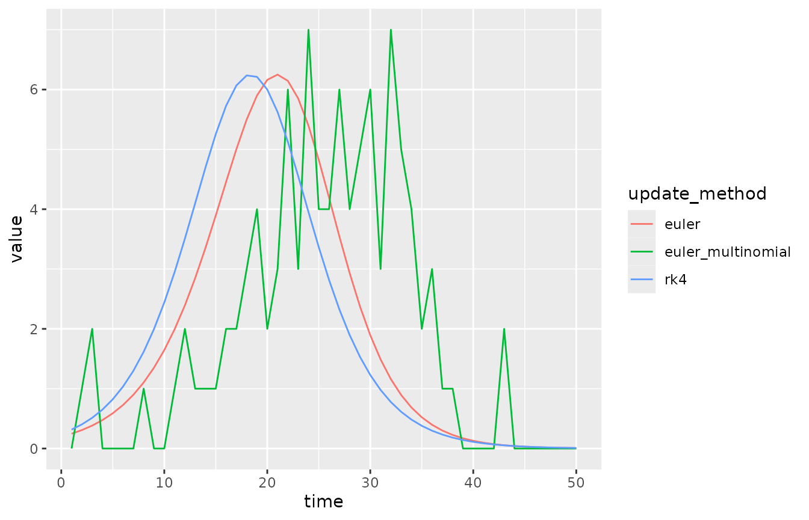
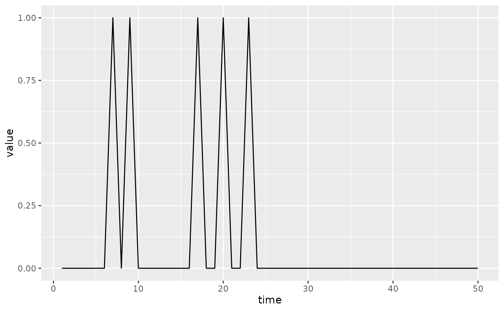

ODE Solvers, Process Error, and Difference Equations
Source:vignettes/state_updaters.Rmd
state_updaters.RmdThe McMasterPandemic project has focused on using
discrete time difference equations to solve the dynamical system. Here
we describe experimental features that allow one to update the data
differently. In particular, it is now possible to use a Runge-Kutta 4
ODE solver (to approximate the solution to the continuous time analogue)
as well as the Euler Multinomial distribution to generate process error.
These features have in principle been available for most of the life of
macpan2, but only recently have they been given a more
convenient interface.
In order to use this interface, models must be rewritten using
explicit declarations of state updates. By explicitly declaring what
expressions correspond to state updates, macpan2 is able to
modify the method of updating without further user input. This makes it
easier to compare difference equations (i.e. Euler steps), ODEs
(i.e. Runge-Kutta), and process error (i.e. Euler Multinomial) runs for
the same underlying dynamical model.
To declare a state update one replaces formulas in the
during argument of a model spec to include calls to the
mp_per_capita_flow() function. As an example we will modify
the SI model to include explicit state updates. The original form of the
model looks like this.
library(macpan2)
si_implicit = mp_tmb_model_spec(
before = list(S ~ N - I)
, during = list(
infection ~ beta * S * I / N
, S ~ S - infection
, I ~ I + infection
)
, default = list(I = 1, N = 100, beta = 0.25)
)
print(si_implicit)
#> ---------------------
#> Default values:
#> ---------------------
#> matrix row col value
#> I 1.00
#> N 100.00
#> beta 0.25
#>
#> ---------------------
#> Before the simulation loop (t = 0):
#> ---------------------
#> 1: S ~ N - I
#>
#> ---------------------
#> At every iteration of the simulation loop (t = 1 to T):
#> ---------------------
#> 1: infection ~ beta * S * I/N
#> 2: S ~ S - infection
#> 3: I ~ I + infectionThe modified version looks like this.
si_explicit = mp_tmb_model_spec(
before = list(S ~ N - I)
, during = list(mp_per_capita_flow("S", "I", infection ~ beta * I / N))
, default = list(I = 1, N = 100, beta = 0.25)
)
print(si_explicit)
#> ---------------------
#> Default values:
#> ---------------------
#> matrix row col value
#> I 1.00
#> N 100.00
#> beta 0.25
#>
#> ---------------------
#> Before the simulation loop (t = 0):
#> ---------------------
#> 1: S ~ N - I
#>
#> ---------------------
#> At every iteration of the simulation loop (t = 1 to T):
#> ---------------------
#> 1: mp_per_capita_flow(from = "S", to = "I", rate = infection ~ beta *
#> I/N)With this explicit spec we can make three different simulators.
si_euler = (si_explicit
|> mp_euler()
|> mp_simulator(time_steps = 50, outputs = "infection")
)
si_rk4 = (si_explicit
|> mp_rk4()
|> mp_simulator(time_steps = 50, outputs = "infection")
)
si_euler_multinomial = (si_explicit
|> mp_euler_multinomial()
|> mp_simulator(time_steps = 50, outputs = "infection")
)
library(dplyr)
#>
#> Attaching package: 'dplyr'
#> The following object is masked from 'package:macpan2':
#>
#> all_equal
#> The following objects are masked from 'package:stats':
#>
#> filter, lag
#> The following objects are masked from 'package:base':
#>
#> intersect, setdiff, setequal, union
trajectory_comparison = list(
euler = mp_trajectory(si_euler)
, rk4 = mp_trajectory(si_rk4)
, euler_multinomial = mp_trajectory(si_euler_multinomial)
) |> bind_rows(.id = "update_method")
print(head(trajectory_comparison))
#> update_method matrix time row col value
#> 1 euler infection 1 0 0 0.2475000
#> 2 euler infection 2 0 0 0.3079844
#> 3 euler infection 3 0 0 0.3828223
#> 4 euler infection 4 0 0 0.4751841
#> 5 euler infection 5 0 0 0.5888103
#> 6 euler infection 6 0 0 0.7280407
library(ggplot2)
(trajectory_comparison
|> rename(`Time Step` = time, Incidence = value)
|> ggplot()
+ geom_line(aes(`Time Step`, Incidence, colour = update_method))
)
The incidence trajectory is different for the three update methods, even though the initial values of the state variables were identical in all three cases.
mp_initial(si_euler)
#> matrix time row col value
#> 1 N 0 0 0 100
#> 2 I 0 0 0 1
#> 3 S 0 0 0 99
mp_initial(si_euler_multinomial)
#> matrix time row col value
#> 1 N 0 0 0 100
#> 2 I 0 0 0 1
#> 3 S 0 0 0 99
mp_initial(si_rk4)
#> matrix time row col value
#> 1 N 0 0 0 100
#> 2 I 0 0 0 1
#> 3 S 0 0 0 99The incidence is different, even during the first time step, because each state update method causes different numbers of susceptible individuals to become infectious at each time step. Further, incidence here is defined for a single time step and so this number of new infectious individuals is exactly the incidence.
Branching Flows and Process Error
siv = mp_tmb_model_spec(
before = list(S ~ N - I - V)
, during = list(
mp_per_capita_flow("S", "I", infection ~ beta * I / N)
, mp_per_capita_flow("S", "V", vaccination ~ rho)
)
, default = list(I = 1, V = 0, N = 100, beta = 0.25, rho = 0.1)
)
print(siv)
#> ---------------------
#> Default values:
#> ---------------------
#> matrix row col value
#> I 1.00
#> V 0.00
#> N 100.00
#> beta 0.25
#> rho 0.10
#>
#> ---------------------
#> Before the simulation loop (t = 0):
#> ---------------------
#> 1: S ~ N - I - V
#>
#> ---------------------
#> At every iteration of the simulation loop (t = 1 to T):
#> ---------------------
#> 1: mp_per_capita_flow(from = "S", to = "I", rate = infection ~ beta *
#> I/N)
#> 2: mp_per_capita_flow(from = "S", to = "V", rate = vaccination ~
#> rho)
(siv
|> mp_euler_multinomial()
|> mp_simulator(50, "infection")
|> mp_trajectory()
|> ggplot()
+ geom_line(aes(time, value))
)